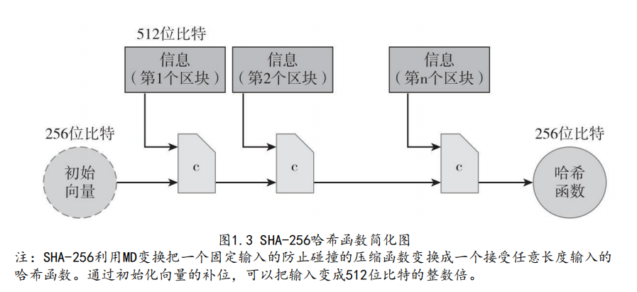
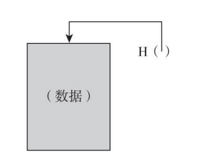
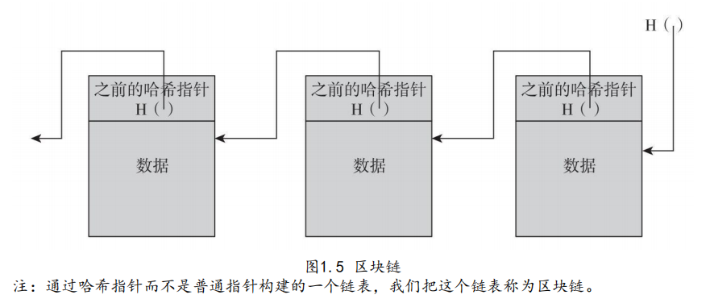
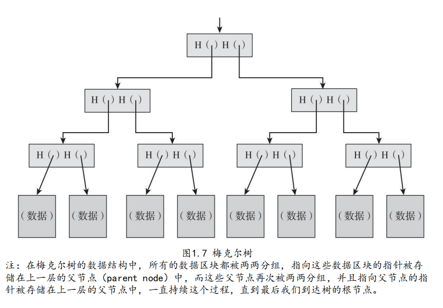

<!DOCTYPE html>
<html>
<head><meta name="generator" content="Hexo 3.9.0">
  <meta charset="utf-8">
  

  
  <title>《区块链：技术驱动金融》-比特币如何做到去中心化p1163-p1203 | Hexo</title>
  <meta name="viewport" content="width=device-width, initial-scale=1, maximum-scale=1">
  <meta name="description" content="1118-1615 1.密码学哈希函数哈希函数特性：  其输入可为任意大小的字符串。 产生固定大小的输出。为使本章讨论更具体，我们假设输出值大小为256位。 它能进行有效计算，简单来说就是对于特定的输入字符串，在合理时间内，我们可以算出哈希函数的输出。更准确地说，对应n位的字符串，其哈希值计算的复杂度为O（n）。  要使哈希函数达到密码安全，要求其具有以下三个附加特性： 1.1碰撞阻力（colli">
<meta name="keywords" content="区块链,密码学">
<meta property="og:type" content="article">
<meta property="og:title" content="《区块链：技术驱动金融》-比特币如何做到去中心化p1163-p1203">
<meta property="og:url" content="http://yoursite.com/2019/09/13/区块链/区块链：技术驱动金融/《区块链：技术驱动金融》-密码学及加密货币概述/index.html">
<meta property="og:site_name" content="Hexo">
<meta property="og:description" content="1118-1615 1.密码学哈希函数哈希函数特性：  其输入可为任意大小的字符串。 产生固定大小的输出。为使本章讨论更具体，我们假设输出值大小为256位。 它能进行有效计算，简单来说就是对于特定的输入字符串，在合理时间内，我们可以算出哈希函数的输出。更准确地说，对应n位的字符串，其哈希值计算的复杂度为O（n）。  要使哈希函数达到密码安全，要求其具有以下三个附加特性： 1.1碰撞阻力（colli">
<meta property="og:locale" content="en">
<meta property="og:image" content="http://yoursite.com/2019/09/13/区块链/区块链：技术驱动金融/《区块链：技术驱动金融》-密码学及加密货币概述/sha256-md.png">
<meta property="og:image" content="http://yoursite.com/2019/09/13/区块链/区块链：技术驱动金融/《区块链：技术驱动金融》-密码学及加密货币概述/hash-pointer.png">
<meta property="og:image" content="http://yoursite.com/2019/09/13/区块链/区块链：技术驱动金融/《区块链：技术驱动金融》-密码学及加密货币概述/blockchain.png">
<meta property="og:image" content="http://yoursite.com/2019/09/13/区块链/区块链：技术驱动金融/《区块链：技术驱动金融》-密码学及加密货币概述/merkle-tree.png">
<meta property="og:updated_time" content="2019-03-03T13:15:12.000Z">
<meta name="twitter:card" content="summary">
<meta name="twitter:title" content="《区块链：技术驱动金融》-比特币如何做到去中心化p1163-p1203">
<meta name="twitter:description" content="1118-1615 1.密码学哈希函数哈希函数特性：  其输入可为任意大小的字符串。 产生固定大小的输出。为使本章讨论更具体，我们假设输出值大小为256位。 它能进行有效计算，简单来说就是对于特定的输入字符串，在合理时间内，我们可以算出哈希函数的输出。更准确地说，对应n位的字符串，其哈希值计算的复杂度为O（n）。  要使哈希函数达到密码安全，要求其具有以下三个附加特性： 1.1碰撞阻力（colli">
<meta name="twitter:image" content="http://yoursite.com/2019/09/13/区块链/区块链：技术驱动金融/《区块链：技术驱动金融》-密码学及加密货币概述/sha256-md.png">
  
    <link rel="alternate" href="/atom.xml" title="Hexo" type="application/atom+xml">
  
  
    <link rel="icon" href="/favicon.png">
  
  
    <link href="//fonts.googleapis.com/css?family=Source+Code+Pro" rel="stylesheet" type="text/css">
  
  <link rel="stylesheet" href="/css/style.css">
</head>
</html>
<body>
  <div id="container">
    <div id="wrap">
      <header id="header">
  <div id="banner"></div>
  <div id="header-outer" class="outer">
    <div id="header-title" class="inner">
      <h1 id="logo-wrap">
        <a href="/" id="logo">Hexo</a>
      </h1>
      
    </div>
    <div id="header-inner" class="inner">
      <nav id="main-nav">
        <a id="main-nav-toggle" class="nav-icon"></a>
        
          <a class="main-nav-link" href="/">Home</a>
        
          <a class="main-nav-link" href="/archives">Archives</a>
        
      </nav>
      <nav id="sub-nav">
        
          <a id="nav-rss-link" class="nav-icon" href="/atom.xml" title="RSS Feed"></a>
        
        <a id="nav-search-btn" class="nav-icon" title="Search"></a>
      </nav>
      <div id="search-form-wrap">
        <form action="//google.com/search" method="get" accept-charset="UTF-8" class="search-form"><input type="search" name="q" class="search-form-input" placeholder="Search"><button type="submit" class="search-form-submit">&#xF002;</button><input type="hidden" name="sitesearch" value="http://yoursite.com"></form>
      </div>
    </div>
  </div>
</header>
      <div class="outer">
        <section id="main"><article id="post-区块链/区块链：技术驱动金融/《区块链：技术驱动金融》-密码学及加密货币概述" class="article article-type-post" itemscope itemprop="blogPost">
  <div class="article-meta">
    <a href="/2019/09/13/区块链/区块链：技术驱动金融/《区块链：技术驱动金融》-密码学及加密货币概述/" class="article-date">
  <time datetime="2019-09-13T04:49:56.000Z" itemprop="datePublished">2019-09-13</time>
</a>
    
  <div class="article-category">
    <a class="article-category-link" href="/categories/区块链/">区块链</a>
  </div>

  </div>
  <div class="article-inner">
    
    
      <header class="article-header">
        
  
    <h1 class="article-title" itemprop="name">
      《区块链：技术驱动金融》-比特币如何做到去中心化p1163-p1203
    </h1>
  

      </header>
    
    <div class="article-entry" itemprop="articleBody">
      
        <p>1118-1615</p>
<h1 id="1-密码学哈希函数"><a href="#1-密码学哈希函数" class="headerlink" title="1.密码学哈希函数"></a>1.密码学哈希函数</h1><p>哈希函数特性：</p>
<ul>
<li>其输入可为任意大小的字符串。</li>
<li>产生固定大小的输出。为使本章讨论更具体，我们假设输出值大小为256位。</li>
<li>它能进行有效计算，简单来说就是对于特定的输入字符串，在合理时间内，我们可以算出哈希函数的输出。更准确地说，对应n位的字符串，其哈希值计算的复杂度为O（n）。</li>
</ul>
<p>要使哈希函数达到密码安全，要求其具有以下三个附加特性：</p>
<h2 id="1-1碰撞阻力（collision-resistance）-可用作信息摘要。"><a href="#1-1碰撞阻力（collision-resistance）-可用作信息摘要。" class="headerlink" title="1.1碰撞阻力（collision-resistance）,可用作信息摘要。"></a>1.1碰撞阻力（collision-resistance）,可用作信息摘要。</h2><h2 id="1-2隐秘性（hiding）"><a href="#1-2隐秘性（hiding）" class="headerlink" title="1.2隐秘性（hiding）"></a>1.2隐秘性（hiding）</h2><a id="more"></a>

<p>  <strong>应用：承诺</strong></p>
<blockquote>
<p>承诺协议 一个承诺协议方案由两个算法构成：com:=commit(msg, nonce)，承诺函数将信息（msg）和一个临时随机数（nonce）作为输入，输出就是一个“承诺”。<br>verify(com, msg, nonce)，验证函数将某个承诺输出（com）、临时随机数（nonce）及信息（msg）作为输入，如果com==commit(msg, nonce)，则返回“真”（true）；反之则返回“假”（false）。我们要求以下两个安全特性要成立：</p>
<ol>
<li>隐秘性：已知com，没有可行的方法找到msg。</li>
<li>约束性：没有可行的办法找到两组(msg,nonce)和(msg’,nonce’)，msg≠msg’,而commit(msg, nonce)==commit(msg’,nonce’)。</li>
</ol>
</blockquote>
<h2 id="1-3-谜题友好（puzzle-friendliness"><a href="#1-3-谜题友好（puzzle-friendliness" class="headerlink" title="1.3 谜题友好（puzzle-friendliness)"></a>1.3 谜题友好（puzzle-friendliness)</h2><p>谜题友好 如果对于任意n位输出值y，假定k选自高阶最小熵分布，如果无法找到一个可行的方法，在比2n小很多时间内找到x，保证H(k‖x)=y成立，那么我们称哈希函数H为谜题友好。<br><strong>应用：搜索谜题</strong></p>
<blockquote>
<p>现在，让我们试想一个应用以阐释谜题友好特性的意义。在这个应用中，我们将建立一个搜索谜题，该谜题是一个需要对庞大空间进行搜索，才能找到解决办法的数学问题。该搜索谜题没有捷径，也就是说除了搜索庞大的空间来进行求解，别无他法。<br>搜索谜题 搜索谜题构成：</p>
<ul>
<li>一个哈希函数H。</li>
<li>从高阶最小熵分布选出的一个取值，id（我们称其为谜题ID）。</li>
<li>目标集合Y。<br>该谜题的解决方法为一个解，x，应该满足以下公式：H(idǁx)∈Y<br>简单理解就是：<br>如果H有一个n位输出，那么它的可能取值有2n个。解决这个谜题要求找到一个位于集合（通常比所有输出值集合小很多）内的输出值，Y的大小决定了谜题的难度。如果Y是所有n位字符串的集合，这个谜题就毫无意义。然而，如果Y只有一个元素，那么这个谜题难度最大，谜题ID取自高阶最小熵分布，这个事实保证了求解无捷径。反过来，如果该ID的确定性很高，那么有人可能会作弊，比如通过使用该ID，事先对谜题进行求解。</li>
</ul>
</blockquote>
<p><strong>如果一个哈希函数具备谜题友好特性，这就意味着对于这个谜题没有一个解决策略，比只是随机地尝试x取值会更好。因此，如果我们要把谜比题做成很难解决是可以的，只要我们能用适合的随机方式生成谜题ID。比特币采矿（是一种搜索谜题）时会采用这一思路。</strong></p>
<h1 id="2-安全哈希算法"><a href="#2-安全哈希算法" class="headerlink" title="2.安全哈希算法"></a>2.安全哈希算法</h1><p>一个主要被比特币世界采用，并且效果还很不错的哈希函数安全哈希算法（Secure  Hash Algorithm 256，简称SHA-256）。</p>
<p><strong>MD（Merkle-Damgard）变换</strong><br>要求哈希函数可以用于任意长度输入。建立一个用于固定长度输入的哈希函数，然后通过一般方法，就可以<strong>将接受固定长度的哈希函数转化为可接受任意长度输入的哈希函数，我们称这个转换过程为MD（Merkle-Damgard）变换</strong>，SHA-256是采用这种变换方法的常用哈希函数之一。</p>
<p>MD变换很简单。比如压缩函数代入长度为m的输入值，并产生长度短一些为n的输出值。哈希函数的输入（可为任意大小）被分为长度为m-n的区块。MD变换运作过程如下：将每个区块与之前区块的输出一起代入压缩函数，注意，输入长度则变为(m-n)+n=m，也刚好就是压缩函数的输入长度。对于第一个区块而言，之前没有的区块，我们需要选取一个初始向量。每次调用哈希函数，这个数字都会被再一次使用，而在实践中，你可以直接在标准文档中找到它。<br>SHA-256函数利用了这样的一个压缩函数，这个压缩函数把一个768位的输入压缩成一个256位的输出，每一个区块的大小是512位。<br></p>
<p><strong>压缩函数（compression function）</strong></p>
<p>通用术语中，这种基础型，可用于固定长度，具备碰撞阻力的哈希函数被称为是压缩函数（compression function）。经过验证，<strong>如果基本压缩函数具有碰撞阻力的特性，那么经过转换而生成的哈希函数也具有碰撞阻力。</strong></p>
<h1 id="2-哈希指针及数据结构"><a href="#2-哈希指针及数据结构" class="headerlink" title="2.哈希指针及数据结构"></a>2.哈希指针及数据结构</h1><p>哈希指针是一种数据结构，是一个指向数据存储位置的指针，同时也是位置数据的哈希值。<br>一个普通的指针可以告诉你数据存储的位置，哈希指针不但可以告诉你数据存储的位置，并且还可以给你一种方式，让你验证数据没有被篡改过。<br></p>
<h2 id="2-1区块链"><a href="#2-1区块链" class="headerlink" title="2.1区块链"></a>2.1区块链</h2><p><br>区块链的一个应用就是“防篡改日志”。也就是说，我们要建立一个存储很多数据的日志数据结构，使我们能将数据附加到日志的末尾。但是如果有人篡改日志前面的数据，我们可以检测到。<br>篡改区块k中的数据会导致区块k+1中的哈希指针的不一致。<br>所以需要一次篡改，直到区块头。</p>
<h2 id="2-2梅克尔树（merkle-trees"><a href="#2-2梅克尔树（merkle-trees" class="headerlink" title="2.2梅克尔树（merkle trees)"></a>2.2梅克尔树（merkle trees)</h2><p><br>假设有很多包含数据的区块，这些区块就是叶子节点。将这些数据区块两两分组，然后为每一组建立一个有两个哈希指针的数据结构，每个指针对应一个区块，这些数据结构就构成了树的下一个层次。轮流将这些区块组两两分组，为每一组建立一个包含每个区块组哈希指针的新的数据结构。以此类推，直到得到一个单一区块，即树根节点。<br>记住树最前面的哈希指针,就可以通过哈希指针回溯到列表中的任何位置，这样能保证数据确实未经篡改。如果对手篡改了树底部的一些数据区块，会导致上一层的哈希指针不匹配，即使他继续篡改这个区块，改动数据行为将最终传递到树的顶端，而此时，他将不能篡改我们存储的哈希指针（因为这会导致区块链中中的一个块被修改）。</p>
<p><strong>隶属证明</strong><br>梅克尔树的另一个特点是它可以实现简洁的隶属证明。假设某人想要证明某个数据区块隶属于梅克尔树。我们只记住树根节点，然后他需要展示给我们数据块信息，以及从该数据区块通向树根节点的那些区块，可以忽略树的其余部分。时间复杂度为O(logn)。</p>
<ul>
<li>哈希指针可以用在任何地方，前提是数据结构不存在循环 *</li>
</ul>
<h1 id="3-数字签名"><a href="#3-数字签名" class="headerlink" title="3.数字签名"></a>3.数字签名</h1><p>对数字签名的两个基本要求：</p>
<ol>
<li>只有你可以制作你自己的签名，但任何看到它的人都可以验证其有效性；</li>
<li>我们希望签名只与某一特定文件发生联系，因此该签名不能用于表明你同意或支持另一份不同的文件。</li>
</ol>
<p><strong>数字签名方案</strong></p>
<p>数字签名方案由以下三个算法构成：</p>
<blockquote>
<ul>
<li>(sk, pk) :=generateKeys(keysize) generateKeys方法把keysize作为输入，来产生一对公钥和私钥。私钥sk被安全保存，并用来签名一段消息；公钥pk是人人都可以找到的，拿到它，就可以用来验证你的签名。</li>
<li>sig:=sign(sk, message) 签名过程是把一段消息和私钥作为一个输入，对于消息输出是签名。</li>
<li>isValid:=verify(pk, message, sig) 验证过程是通过把一段消息和签名消息与公钥作为输入，如果返回的结果是真，证明签名属实；如果返回的结果为假，证明签名消息为假。<br>我们要求以下两个性质有效：</li>
<li>有效签名可以通过验证，即：<br>verify(pk, message, sign(sk, message))==true</li>
<li>签名不可伪造。</li>
</ul>
</blockquote>
<p><strong>数字签名在实际中存在的问题</strong></p>
<ol>
<li>很多签名算法是随机的（特别是比特币使用的算法），因此我们需要随机性的良好来源。我们不能低估这一点的重要性，因为不良随机性会使你认为安全的算法变得不安全。</li>
<li>另一个实际问题是关于信息大小。在实践中，能够签署的信息大小是有限制的，因为真实的方案将在位数长度有所限制的字符串中运行。有一个简单的方法可以解决这个限制：对信息的哈希值进行签署，而非对信息本身进行签署。如果我们使用输出值为256位的加密的哈希函数，那么我们可以有效地签署任何长度的信息，只要我们的签名方案能够签署256位的信息。如上所述，我们可以将信息的哈希值作为信息摘要，哈希函数具有碰撞阻力，因此这种方式是安全的。</li>
</ol>
<p>后面会用到的另一个技巧是，可以对于哈希指针进行签署。如果签署了哈希指针，那么该签名覆盖（或者说保护）整个结构——这不仅仅是哈希指针本身，还包括哈希指针指向的整个区块链。比如，如果签署了区块链末尾的哈希指针，其结果就是你有效地数字签署了整条区块链。</p>
<p><strong>椭圆曲线数字签名算法</strong><br>比特币使用的数字签名方案叫作椭圆曲线数字签名算法（ECDSA）。<br>一些重要参数：</p>
<blockquote>
<p>个人密钥：256位<br>公钥（未压缩）：512位<br>公钥（压缩）：257位<br>待签名信息：256位<br>签名：512位</p>
</blockquote>

      
    </div>
    <footer class="article-footer">
      <a data-url="http://yoursite.com/2019/09/13/区块链/区块链：技术驱动金融/《区块链：技术驱动金融》-密码学及加密货币概述/" data-id="ck0hncd8s00bqfyxx2dva444l" class="article-share-link">Share</a>
      
      
  <ul class="article-tag-list"><li class="article-tag-list-item"><a class="article-tag-list-link" href="/tags/区块链/">区块链</a></li><li class="article-tag-list-item"><a class="article-tag-list-link" href="/tags/密码学/">密码学</a></li></ul>

    </footer>
  </div>
  
    
<nav id="article-nav">
  
    <a href="/2019/09/13/区块链/区块链：技术驱动金融/《区块链：技术驱动金融》-比特币去中心化/" id="article-nav-newer" class="article-nav-link-wrap">
      <strong class="article-nav-caption">Newer</strong>
      <div class="article-nav-title">
        
          《区块链：技术驱动金融》-比特币如何做到去中心化
        
      </div>
    </a>
  
  
    <a href="/2019/09/13/区块链/区块链：技术驱动金融/《区块链：技术驱动金融》-比特币挖矿/" id="article-nav-older" class="article-nav-link-wrap">
      <strong class="article-nav-caption">Older</strong>
      <div class="article-nav-title">《区块链：技术驱动金融》-比特币挖矿</div>
    </a>
  
</nav>

  
</article>

</section>
        
          <aside id="sidebar">
  
    
  <div class="widget-wrap">
    <h3 class="widget-title">Categories</h3>
    <div class="widget">
      <ul class="category-list"><li class="category-list-item"><a class="category-list-link" href="/categories/GPU/">GPU</a></li><li class="category-list-item"><a class="category-list-link" href="/categories/Go/">Go</a></li><li class="category-list-item"><a class="category-list-link" href="/categories/Spark/">Spark</a></li><li class="category-list-item"><a class="category-list-link" href="/categories/docker/">docker</a></li><li class="category-list-item"><a class="category-list-link" href="/categories/go/">go</a></li><li class="category-list-item"><a class="category-list-link" href="/categories/golang/">golang</a></li><li class="category-list-item"><a class="category-list-link" href="/categories/linux/">linux</a></li><li class="category-list-item"><a class="category-list-link" href="/categories/node/">node</a></li><li class="category-list-item"><a class="category-list-link" href="/categories/书中自有黄金屋/">书中自有黄金屋</a></li><li class="category-list-item"><a class="category-list-link" href="/categories/人生苦短我用python/">人生苦短我用python</a><ul class="category-list-child"><li class="category-list-item"><a class="category-list-link" href="/categories/人生苦短我用python/linux环境配置/">linux环境配置</a></li></ul></li><li class="category-list-item"><a class="category-list-link" href="/categories/其他/">其他</a></li><li class="category-list-item"><a class="category-list-link" href="/categories/分布式/">分布式</a><ul class="category-list-child"><li class="category-list-item"><a class="category-list-link" href="/categories/分布式/分布式共识算法/">分布式共识算法</a></li></ul></li><li class="category-list-item"><a class="category-list-link" href="/categories/分布式基本理论/">分布式基本理论</a></li><li class="category-list-item"><a class="category-list-link" href="/categories/区块链/">区块链</a><ul class="category-list-child"><li class="category-list-item"><a class="category-list-link" href="/categories/区块链/Hyperledger-Fabric/">Hyperledger Fabric</a></li><li class="category-list-item"><a class="category-list-link" href="/categories/区块链/《区块链：从数字货币到信用社会》/">《区块链：从数字货币到信用社会》</a></li><li class="category-list-item"><a class="category-list-link" href="/categories/区块链/以太坊开发/">以太坊开发</a></li><li class="category-list-item"><a class="category-list-link" href="/categories/区块链/区块链基本原理/">区块链基本原理</a></li><li class="category-list-item"><a class="category-list-link" href="/categories/区块链/比特币原理/">比特币原理</a></li></ul></li><li class="category-list-item"><a class="category-list-link" href="/categories/大数据/">大数据</a></li><li class="category-list-item"><a class="category-list-link" href="/categories/工具/">工具</a></li><li class="category-list-item"><a class="category-list-link" href="/categories/编程基础/">编程基础</a></li><li class="category-list-item"><a class="category-list-link" href="/categories/问题记录/">问题记录</a></li></ul>
    </div>
  </div>


  
    
  <div class="widget-wrap">
    <h3 class="widget-title">Tags</h3>
    <div class="widget">
      <ul class="tag-list"><li class="tag-list-item"><a class="tag-list-link" href="/tags/ACID/">ACID</a></li><li class="tag-list-item"><a class="tag-list-link" href="/tags/CAP/">CAP</a></li><li class="tag-list-item"><a class="tag-list-link" href="/tags/ECDSA/">ECDSA</a></li><li class="tag-list-item"><a class="tag-list-link" href="/tags/GO/">GO</a></li><li class="tag-list-item"><a class="tag-list-link" href="/tags/GPU/">GPU</a></li><li class="tag-list-item"><a class="tag-list-link" href="/tags/Hyperledger-Fabric/">Hyperledger Fabric</a></li><li class="tag-list-item"><a class="tag-list-link" href="/tags/PBFT/">PBFT</a></li><li class="tag-list-item"><a class="tag-list-link" href="/tags/Spark/">Spark</a></li><li class="tag-list-item"><a class="tag-list-link" href="/tags/blockchain/">blockchain</a></li><li class="tag-list-item"><a class="tag-list-link" href="/tags/c/">c++</a></li><li class="tag-list-item"><a class="tag-list-link" href="/tags/centos/">centos</a></li><li class="tag-list-item"><a class="tag-list-link" href="/tags/centos7/">centos7</a></li><li class="tag-list-item"><a class="tag-list-link" href="/tags/cuda/">cuda</a></li><li class="tag-list-item"><a class="tag-list-link" href="/tags/docker/">docker</a></li><li class="tag-list-item"><a class="tag-list-link" href="/tags/dockerfile/">dockerfile</a></li><li class="tag-list-item"><a class="tag-list-link" href="/tags/eos/">eos</a></li><li class="tag-list-item"><a class="tag-list-link" href="/tags/gas/">gas</a></li><li class="tag-list-item"><a class="tag-list-link" href="/tags/git/">git</a></li><li class="tag-list-item"><a class="tag-list-link" href="/tags/go/">go</a></li><li class="tag-list-item"><a class="tag-list-link" href="/tags/hadoop/">hadoop</a></li><li class="tag-list-item"><a class="tag-list-link" href="/tags/hyperledger-fabric/">hyperledger fabric</a></li><li class="tag-list-item"><a class="tag-list-link" href="/tags/js/">js</a></li><li class="tag-list-item"><a class="tag-list-link" href="/tags/leveldb/">leveldb</a></li><li class="tag-list-item"><a class="tag-list-link" href="/tags/linux/">linux</a></li><li class="tag-list-item"><a class="tag-list-link" href="/tags/mysql/">mysql</a></li><li class="tag-list-item"><a class="tag-list-link" href="/tags/node/">node</a></li><li class="tag-list-item"><a class="tag-list-link" href="/tags/nvcc/">nvcc</a></li><li class="tag-list-item"><a class="tag-list-link" href="/tags/paxos/">paxos</a></li><li class="tag-list-item"><a class="tag-list-link" href="/tags/pos/">pos</a></li><li class="tag-list-item"><a class="tag-list-link" href="/tags/pow/">pow</a></li><li class="tag-list-item"><a class="tag-list-link" href="/tags/python/">python</a></li><li class="tag-list-item"><a class="tag-list-link" href="/tags/python3/">python3</a></li><li class="tag-list-item"><a class="tag-list-link" href="/tags/spv/">spv</a></li><li class="tag-list-item"><a class="tag-list-link" href="/tags/yaml/">yaml</a></li><li class="tag-list-item"><a class="tag-list-link" href="/tags/zab/">zab</a></li><li class="tag-list-item"><a class="tag-list-link" href="/tags/以太坊/">以太坊</a></li><li class="tag-list-item"><a class="tag-list-link" href="/tags/分布式共识算法/">分布式共识算法</a></li><li class="tag-list-item"><a class="tag-list-link" href="/tags/分布式数据库/">分布式数据库</a></li><li class="tag-list-item"><a class="tag-list-link" href="/tags/分布式理论/">分布式理论</a></li><li class="tag-list-item"><a class="tag-list-link" href="/tags/区块链/">区块链</a></li><li class="tag-list-item"><a class="tag-list-link" href="/tags/地址生成/">地址生成</a></li><li class="tag-list-item"><a class="tag-list-link" href="/tags/大数据/">大数据</a></li><li class="tag-list-item"><a class="tag-list-link" href="/tags/密码学/">密码学</a></li><li class="tag-list-item"><a class="tag-list-link" href="/tags/挖矿/">挖矿</a></li><li class="tag-list-item"><a class="tag-list-link" href="/tags/比特币/">比特币</a></li><li class="tag-list-item"><a class="tag-list-link" href="/tags/编程基础/">编程基础</a></li><li class="tag-list-item"><a class="tag-list-link" href="/tags/错误记录/">错误记录</a></li><li class="tag-list-item"><a class="tag-list-link" href="/tags/问题记录/">问题记录</a></li><li class="tag-list-item"><a class="tag-list-link" href="/tags/阅读/">阅读</a></li></ul>
    </div>
  </div>


  
    
  <div class="widget-wrap">
    <h3 class="widget-title">Tag Cloud</h3>
    <div class="widget tagcloud">
      <a href="/tags/ACID/" style="font-size: 11.67px;">ACID</a> <a href="/tags/CAP/" style="font-size: 10px;">CAP</a> <a href="/tags/ECDSA/" style="font-size: 15px;">ECDSA</a> <a href="/tags/GO/" style="font-size: 13.33px;">GO</a> <a href="/tags/GPU/" style="font-size: 11.67px;">GPU</a> <a href="/tags/Hyperledger-Fabric/" style="font-size: 16.67px;">Hyperledger Fabric</a> <a href="/tags/PBFT/" style="font-size: 10px;">PBFT</a> <a href="/tags/Spark/" style="font-size: 10px;">Spark</a> <a href="/tags/blockchain/" style="font-size: 20px;">blockchain</a> <a href="/tags/c/" style="font-size: 11.67px;">c++</a> <a href="/tags/centos/" style="font-size: 11.67px;">centos</a> <a href="/tags/centos7/" style="font-size: 15px;">centos7</a> <a href="/tags/cuda/" style="font-size: 10px;">cuda</a> <a href="/tags/docker/" style="font-size: 18.33px;">docker</a> <a href="/tags/dockerfile/" style="font-size: 11.67px;">dockerfile</a> <a href="/tags/eos/" style="font-size: 10px;">eos</a> <a href="/tags/gas/" style="font-size: 10px;">gas</a> <a href="/tags/git/" style="font-size: 10px;">git</a> <a href="/tags/go/" style="font-size: 15px;">go</a> <a href="/tags/hadoop/" style="font-size: 10px;">hadoop</a> <a href="/tags/hyperledger-fabric/" style="font-size: 10px;">hyperledger fabric</a> <a href="/tags/js/" style="font-size: 10px;">js</a> <a href="/tags/leveldb/" style="font-size: 10px;">leveldb</a> <a href="/tags/linux/" style="font-size: 13.33px;">linux</a> <a href="/tags/mysql/" style="font-size: 15px;">mysql</a> <a href="/tags/node/" style="font-size: 10px;">node</a> <a href="/tags/nvcc/" style="font-size: 10px;">nvcc</a> <a href="/tags/paxos/" style="font-size: 10px;">paxos</a> <a href="/tags/pos/" style="font-size: 10px;">pos</a> <a href="/tags/pow/" style="font-size: 10px;">pow</a> <a href="/tags/python/" style="font-size: 13.33px;">python</a> <a href="/tags/python3/" style="font-size: 15px;">python3</a> <a href="/tags/spv/" style="font-size: 11.67px;">spv</a> <a href="/tags/yaml/" style="font-size: 10px;">yaml</a> <a href="/tags/zab/" style="font-size: 10px;">zab</a> <a href="/tags/以太坊/" style="font-size: 10px;">以太坊</a> <a href="/tags/分布式共识算法/" style="font-size: 15px;">分布式共识算法</a> <a href="/tags/分布式数据库/" style="font-size: 10px;">分布式数据库</a> <a href="/tags/分布式理论/" style="font-size: 13.33px;">分布式理论</a> <a href="/tags/区块链/" style="font-size: 11.67px;">区块链</a> <a href="/tags/地址生成/" style="font-size: 10px;">地址生成</a> <a href="/tags/大数据/" style="font-size: 11.67px;">大数据</a> <a href="/tags/密码学/" style="font-size: 10px;">密码学</a> <a href="/tags/挖矿/" style="font-size: 10px;">挖矿</a> <a href="/tags/比特币/" style="font-size: 11.67px;">比特币</a> <a href="/tags/编程基础/" style="font-size: 11.67px;">编程基础</a> <a href="/tags/错误记录/" style="font-size: 10px;">错误记录</a> <a href="/tags/问题记录/" style="font-size: 10px;">问题记录</a> <a href="/tags/阅读/" style="font-size: 11.67px;">阅读</a>
    </div>
  </div>

  
    
  <div class="widget-wrap">
    <h3 class="widget-title">Archives</h3>
    <div class="widget">
      <ul class="archive-list"><li class="archive-list-item"><a class="archive-list-link" href="/archives/2019/09/">September 2019</a></li><li class="archive-list-item"><a class="archive-list-link" href="/archives/2018/07/">July 2018</a></li><li class="archive-list-item"><a class="archive-list-link" href="/archives/2018/01/">January 2018</a></li><li class="archive-list-item"><a class="archive-list-link" href="/archives/2017/12/">December 2017</a></li></ul>
    </div>
  </div>


  
    
  <div class="widget-wrap">
    <h3 class="widget-title">Recent Posts</h3>
    <div class="widget">
      <ul>
        
          <li>
            <a href="/2019/09/13/玩转linux/linux使用/">linux使用</a>
          </li>
        
          <li>
            <a href="/2019/09/13/区块链/比特币原理/比特币交易脚本及交易数据(二)/">比特币交易脚本及交易数据(二)</a>
          </li>
        
          <li>
            <a href="/2019/09/13/编程基础/c++面向对象/">C++面向对象</a>
          </li>
        
          <li>
            <a href="/2019/09/13/编程基础/c++基础/">C++基础</a>
          </li>
        
          <li>
            <a href="/2019/09/13/区块链/比特币原理/比特币交易脚本及交易数据(一)/">比特币交易脚本及交易数据(一)</a>
          </li>
        
      </ul>
    </div>
  </div>

  
</aside>
        
      </div>
      <footer id="footer">
  
  <div class="outer">
    <div id="footer-info" class="inner">
      &copy; 2019 John Doe<br>
      Powered by <a href="http://hexo.io/" target="_blank">Hexo</a>
    </div>
  </div>
</footer>
    </div>
    <nav id="mobile-nav">
  
    <a href="/" class="mobile-nav-link">Home</a>
  
    <a href="/archives" class="mobile-nav-link">Archives</a>
  
</nav>
    

<script src="//ajax.googleapis.com/ajax/libs/jquery/2.0.3/jquery.min.js"></script>


  <link rel="stylesheet" href="/fancybox/jquery.fancybox.css">
  <script src="/fancybox/jquery.fancybox.pack.js"></script>


<script src="/js/script.js"></script>


  </div>
</body>
</html>